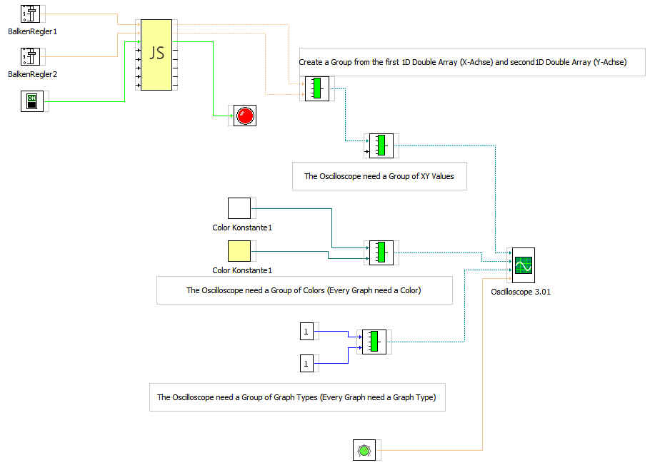
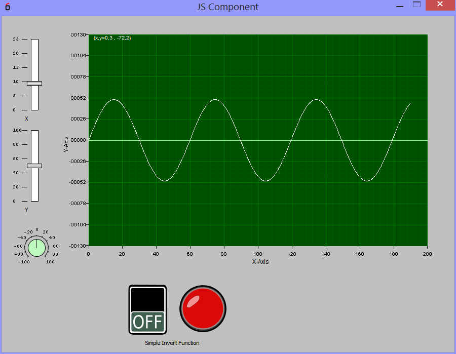

El componente JavaScript
El componente JavaScript usará el motor de Javascript Java incorporado.
Antes
de la ejecución, el código JS se compila con el fin de mejorar
la velocidad.
Es una alternativa rápida al propio panel de circuito para
escribir componentes. Sin SDK Java!
¿Cómo funciona el componente de JS?
1. Configure los pines de entrada y salida en el Editor de propiedades
2. En el menú Herramientas-> Opciones-> Editores: Editor de Javascript de su editor favorito JS. por ejemplo:
• Notepad ++ bajo https://notepad-plus-plus.org/
• Netbeans bajo https://netbeans.org/
3. En el editor de propiedades a continuación, el botón "..." bajo el código Javascript y JS. Si va a guardar el código JS, este se incorpora automáticamente en el componente.
He aquí un pequeño ejemplo de una matriz de doble procesamiento 1D
La generación de una onda sinusoidal para un osciloscopio:
InPin1
tipo C_DOUBLE (ZoomX)
InPin2 tipo C_DOUBLE (ZOOMY)
OutPin0 tipo C_ARRAY_1D_DOUBLE (puntos para el eje X)
OutPin0 tipo C_ARRAY_1D_DOUBLE (puntos para el eje Y)
Listado
del programa
var zoomx=in0.getValue();
var zoomy=in1.getValue();
var max=1000;
var outX=new Array(max);
var outY=new Array(max);
var x=0;
var y=0;
for (var i=0;i
x=i*0.1;
y=Math.sin(x);
outX[i]=x*zoomx;
outY[i]=y*zoomy;
}
out0.setValues(outX);
out1.setValues(outY);
out0.setChanged(true);
out2.setChanged(true);
¿Qué debo hacer?
Cuando una salida
sería enviada la información, así como el método setChanged
(verdadero) debe ser llamado después de que el conjunto de
valores.
Ej:
out.setvalue("Test");
out.setChanged(true);
El componente tiene 8 entradas y 8 salidas y conoce todos los
tipos de datos MyOpenLab:
Una descripción de la interfaz de los tipos de datos se puede
consultar en https://myopenlab.de/XXXXXXXXXXX in0, in1, ..... A7
out0, OUT1, ..... out7

